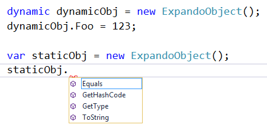

What's a dynamic?
The dynamic keyword
dynamic blob = JsonConvert.DeserializeObject(
"{ foo: 123 }");
Console.WriteLine(blob.foo);
Which of these creates a dynamic object?
new DynamicObject();
new ExpandoObject();
new {
Foo = 123
};
Nothing dynamic about anonymous types
internal sealed class
<>f__AnonymousType0<<Foo>j__TPar>
{
private readonly <Foo>j__TPar <Foo>i__Field;
public <Foo>j__TPar Foo
{
get
{
return this.<Foo>i__Field;
}
}
[…]
}
As for the others...
Trick Question
It's not incorrect to call an instance of DynamicObject, etc. a dynamic object
Just that it's the wrong way to think about it
What is the CLR type of the following declarations?
public static void DeclarationTest()
{
var varInstance = "Hello, world!";
dynamic dynamicInstance = "Hello, world!";
object objectInstance = "Hello, world!";
IEnumerable ienumInstance = "Hello, world!";
}
.method […] void DeclarationTest() […]
{
.maxstack 1
.locals init ([0] string varInstance,
[1] object dynamicInstance,
[2] object objectInstance,
[3] class […]IEnumerable ienumInstance)
IL_0000: nop
IL_0001: ldstr "Hello, world!"
IL_0006: stloc.0
IL_0007: ldstr "Hello, world!"
IL_000c: stloc.1
IL_000d: ldstr "Hello, world!"
[…]
Types are about compile-time
(Mostly)
dynamic is about run-time
Example from the beginning:
dynamic blob = JsonConvert.DeserializeObject(
"{ foo: 123 }");
Console.WriteLine(blob.foo);This works because the foo member isn't looked up until runtime
Let's talk about ExpandoObject
Dynamic vs Static Usage

public sealed class ExpandoObject :
IDynamicMetaObjectProvider,
IDictionary<string, object>,
ICollection<KeyValuePair<string, object>>,
IEnumerable<KeyValuePair<string, object>>,
IEnumerable,
INotifyPropertyChanged
{
public ExpandoObject();
}
Why not just use IDictionary<string, object>?
var mailbox = new Dictionary<string,object>();
mailbox["displayName"] = "Jane Doe";
var contactInfo = new Dictionary<string,object>();
contactInfo["city"] = "Blacksburg";
mailbox["contactInfo"] = contactInfo;
Accessing Nested Dictionaries
var contactInfo = (IDictionary<string, object>)
mailbox["contactInfo"]);
var city = contactInfo["city"] as string;
Console.WriteLine(city);
Accessing Nested ExpandoObject
dynamic mailbox = new ExpandoObject();
mailbox.displayName = "Jane Doe";
mailbox.contactInfo = new ExpandoObject();
mailbox.contactInfo.city = "Blacksburg";
Console.WriteLine(mailbox.contactInfo.city);
Can assign methods
dynamic mailbox = new ExpandoObject();
mailbox.FullName = new Func<string>(
() => mailbox.First + " " + mailbox.Last);
mailbox.First = "Jane";
mailbox.Last = "Doe";
Console.WriteLine(mailbox.FullName());
Methods Possibly More Useful On DynamicObject
ExpandoObject = property bag you add to at runtime
DynamicObject = class you inherit from to easily implement IDynamicMetaObjectProvider
Uses for dynamic
- Browser DOM
- COM
- IronPython / IronRuby
- REST API
Real World Example
public async Task<IEnumerable<T>> GetAll<T>(
string path, string pagedProperty, int pageSize=50)
{
var result = new List<T>();
var offset = 0;
dynamic page;
do
{
var queryString = string.Format(
"offset={0}&size={1}", offset, pageSize);
page = await Get(
JoinPathWithQueryString(path, queryString));
result.AddRange(GetEnumerableProperty<T>(
page, pagedProperty));
offset += pageSize;
} while (offset < page.total);
return result;
}Real World Example (cont.)
static IEnumerable<T> GetEnumerableProperty<T>(
ExpandoObject obj, string property)
{
var asDict = (IDictionary<string, object>)obj;
var items = (IEnumerable<object>)asDict[property];
foreach (var item in items)
yield return item is T
? (T)item
: JsonConvert.DeserializeObject<T>(
JsonConvert.SerializeObject(item));
}
Subtleties of dynamic
dynamic vs Reflection
-
dynamic uses Reflection underneath the hood
(dynamic member lookups are cached for performance)
-
dynamic does whatever C# would do but at runtime
(for example: dynamic respects private, protected, etc.)
- dynamic expresses business logic
- Reflection expresses mechanism